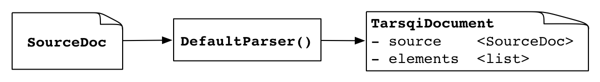

Overview of the TARSQI Toolkit
Marc Verhagen, December 2015
This document gives a high-level overview of the TARSQI Toolkit code.
[ toplevel
| tags
| preprocessor
| gutime
| evita
| slinket
| s2t
| blinker
| classifier
| sputlink
]
1. Top-level Processing
All code, barring a few scripts, lives in the code directory
inside the Tarsqi distribution. All paths given are relative to that path.
The top-level processing chain is implemented in the Tarsqi class in
tarsqi.py, which upon initialization does the following:
- Read the parameters. These are read from settings.txt but can
also be overridden on the command line invocation.
- Create a pipeline from the --pipeline parameter. A pipeline is
a list of pairs where each pair has the name of the component and the Python
class that implements it.
- Select the source parser. There are four parsers defined in
docmodel.parsers: DefaultParser, TimebankParser, ATEEParser and RTE3Parser. The
choice of parser is guided by the --genre parameter.
There is an instance of the Tarsqi class for each document processed. Actual
processing occurs through the Tarsqi.process() method, which does the following
things:
- The class docmodel.source_parser.SourceParser parses the input file using
parse_file(filename) and returns an instance of docmodel.source_parser.SourceDoc
which includes two instance variables: text and tags.

| docmodel.source_parser.SourceDoc |
| text |
unicode string |
| tags |
| docmodel.source_parser.TagRepository |
| tags |
list of instances of docmodel.source_parser.Tag |
| opening_tags |
dictionary of instances of docmodel.source_parser.Tag, indexed on
opening offsets |
| closing_tags |
dictionary of tag names, indexed on closing offsets and opening
offsets |
|
The input is assumed to be an XML file with inline XML tags and the SourceParser
turns it into the primary text data (text without tags) and a dictionary of
class TagRepository which has tags with character offsets pointing into the
primary data. Both instance variables are intended to be read-only. That is,
after the SourceDoc is created the primary data string never changes and tags
are not added to the TagRepository. Here is a minimal example as an
illustration:
<?xml version="1.0" ?>
<text>One <noun>tag</noun> only.</text>
For this text, the tags list is as follows:
[ <docmodel.source_parser.Tag instance at 0x108d6c518>,
<docmodel.source_parser.Tag instance at 0x108d6c4d0> ]
For clarity, here is the same list but with the unhelpful print string for
Tags replaced by a more helpful one:
[ <Tag text id=1 1:14 {}>,
<Tag noun id=2 5:8 {}> ]
The dictionaries on the two tags are empty, but if the XML tags had
attributes they would end up in there. The two other instance variables on
TagRepository are in effect indexes over the list, giving quick access to the
tags at specified begin or end offsets. The opening tags dictionary is as
follows:
{ 1: [ <Tag text id=1 1:14 {}> ],
5: [ <Tag noun id=2 5:8 {}> ] }
Which indicates that there are opening tags at positions 1 and 5, and in both
cases there is only one tag at that offset. Instances of Tag contain the name of
the tag, its attributes and its begin and end offsets. The closing tags
dictionary for the above example is:
{ 8: { 5: {u'noun': True} },
14: { 1: {u'text': True} } }
This dictionary says that at character offset 8 we close a noun tag that was
opened at offset 5. The TagRepository class has convenience methods to access
tags.
- One of the parsers from docmodel.parsers is then used to take the SourceDoc
instance and create an instance of docmodel.document.TarsqiDocument.

| docmodel.document.TarsqiDocument |
| source |
an instance of docmodel.source_parser.SourceDoc |
| metadata |
a dictionary |
| parameters |
a dictionary |
| elements |
a list of instances of docmodel.document.TarsqiDocElement |
The DefaultParser does some minimal processing of the source document,
extracting a document creation time and putting it in the metadata dictionary
under the 'dct' key and splitting the document into paragraphs and putting each
paragraph in the elements list. In the current implimentation, all elements are
instances of TarsqiDocParagraph, a subclass of TarsqiDocElement, which has the
following structure:
| docmodel.document.TarsqiDocElement |
| doc |
an instance of docmodel.document.TarsqiDocument |
| begin |
the beginning offset in the SourceDoc in doc.source |
| end |
the ending offset in the SourceDoc in doc.source |
| source_tags |
an instance of docmodel.source_parser.TagRepository, containing a subset
of the tags in the source document, namely those that span part or all of the
paragraph |
| tarsqi_tags |
an instance of docmodel.source_parser.TagRepository, initially empty |
In the future, other sub classes of TarsqiDocElement will be added (for example
SectionHeader) and most likely the elements variable will become a tree rather
than a flat list.
- Add the parameters from the settings.txt file and the command line options
to the TarsqiDocument. This fills in the parameters dictionary.
- Apply components as specified in the pipeline. Recall that on initialization
the Tarsqi class creates a pipeline of components from the user's --pipeline
option. If we had used a command line invocation like
$ python tarsqi.py --pipeline=PREPROCESSOR,GUTIME,EVITA in.xml out.xml
then the pipeline as stored in the Tarsqi instance would be
[('PREPROCESSOR', <class components.preprocessing.wrapper.PreprocessorWrapper at 0x10514a668>),
('GUTIME', <class components.gutime.wrapper.GUTimeWrapper at 0x1051c36d0>),
('EVITA', <class components.evita.wrapper.EvitaWrapper at 0x1051c3ce8>)]
The code for all components is wrapped in special wrapper classes like
PreprocessorWrapper and EvitaWrapper in the example above. All available
wrappers are defined in the COMPONENTS dictiornary in
components.__init__.py. Every wrapper is required to have the following two
methods:
- an initialization method that takes the TarsqiDocument as its sole argument
- a process() method which has the side effect of changing the TarsqiDocument
instance.
Components update the TarsqiDocument by updating the TagRepository instances
inside the TarsqiDocElement instances in the elements list. In some cases,
another data structure is updated first and then the results are exported to the
TarsqiDocElements.
- Print results. The Tarsqi class does this by asking the TarsqiDocument to
print the source string and all tags to a document, which in turn is done by
retrieving the source and the source tags from the SourceDoc instance and the
added Tarsqi tags from the TagRepository in the tarsqi_tags attributes on
TarsqiDocElements. The output is written to one file with both the primary data
and the tags. For example, take the example input below.
<?xml version="1.0" ?>
<text>He sleeps on Friday.</text>
And suppose we have a pipeline that includes the preprocessor, GUTime and
Evita. Then the output will be:
<ttk>
<text>
He sleeps on Friday.
</text>
<source_tags>
<text id="1" begin="1" end="21" />
</source_tags>
<ttk_tags>
<TIMEX3 tid="t0" type="DATE" value="20160105" functionInDocument="CREATION_TIME"/>
<doc_element type="TarsqiDocParagraph" begin="1" end="21">
<lex id="l1" begin="1" end="3" lemma="he" pos="PP" />
<ng id="c1" begin="1" end="3" targets="l1 l1" />
<lex id="l2" begin="4" end="10" lemma="sleep" pos="VBZ" />
<vg id="c2" begin="4" end="10" targets="l2 l2" />
<lex id="l3" begin="11" end="13" lemma="on" pos="IN" />
<lex id="l4" begin="14" end="20" lemma="Friday" pos="NNP" />
<ng id="c3" begin="14" end="20" targets="l4 l4" />
<lex id="l5" begin="20" end="21" lemma="." pos="." />
<s id="s1" begin="1" end="21" targets="l1 l5" />
<TIMEX3 id="1" begin="14" end="20" type="DATE" value="" />
<EVENT id="2" begin="4" end="10" polarity="POS" pos="VERB" eiid="ei1"
tense="PRESENT" eid="e1" aspect="NONE" class="OCCURRENCE" />
</doc_element>
</ttk_tags>
</ttk>
Note that the EVENT tag will actually be printed on one line only, it is split
over two lines here for readability.
2. Tags added by the Tarsqi Toolkit
All Tarsqi tags added by the system have identifiers that are unique to the document
and the tag type. The identifiers consist of a tag-specific prefix and an integer. The
prefixes and the tags they go with are listed in the table below.
| <doc_element> |
DefaultParser and subclasses |
paragraphs |
| <s id="s1"> |
Tokenizer |
sentences |
| <lex id="l12"> |
Tokenizer and Tagger |
tokens with pos and lemma |
| <ng id="c1"> |
Chunker |
noun chunks |
| <vg id="c2"> |
Chunker |
verb chunks |
| <TIMEX3 tid="t3"> |
GUTime |
TimeML time expressions |
| <EVENT eid="e23" eiid="ei23"> |
Evita |
events |
| <ALINK lid="l31"> |
Slinket |
aspectual links |
| <SLINK lid="l32"> |
Slinket |
subordinating links |
| <TLINK lid="l33"> |
Blinker, S2T, classifier |
temporal links |
Tags introduced by the preprocessor have lower case names and use the "id"
attribute for the identifiers. TimeML tags are uppercase and introduce their
identifiers with special attributes "tid", "eid", "eiid", and "lid". Noun chunks
and verb chunks share the same prefix and so do the three link types. As per the
TimeML specifications, events have an event identifier and an event instance
identifier, this allows us to deal with those events that have more than one
instance. The latter case is not recognized by the Tarsqi Toolkit however and
the eid and eiid will always have the same integer in it (but not with the same
prefix).
3. The Preprocessor
The PreprocessorWrapper loops through the TarsiDocElements. For each element,
it extracts the source text, runs the tokenizer, tagger and chunker on that text
and then exports the results back to the TarsqiDocElements.

The tokenizer copies the text from the TarsqiDocParagraph (which actually
does not hold the text itself but it has the character offsets in the SourceDoc
and a reference to the SourceDoc) and it returns a list of pairs, where each
pair is either ('<s>', None) for sentence boundaries or a pair of a string
and a TokenizedLex instance, which has instance variables begin, end and
text:
[('<s>', None),
(u'Fido', <components.preprocessing.tokenizer.TokenizedLex instance at 0x110844998>),
(u'barks', <components.preprocessing.tokenizer.TokenizedLex instance at 0x110844ab8>),
(u'.', <components.preprocessing.tokenizer.TokenizedLex instance at 0x110844b48>)]
Since the tokenizer runs in isolation on the text of an element, assigns
offsets starting at 0. The PreprocessorWrapper adjusts these so that the offsets
point into the correct spot in the full text source of the document.
The tagger is then fed a vertical string consisting of the first element of
all pairs (the s tag or a string):
<s>
Fido
barks
.
The tagger returns a list with as many elements as lines, where each element is
either an s tag or a tab-separated triple of string, part-of-speech tag and
lemma:
['<s>',
'Fido\tNP\tFido',
'barks\tVVZ\tbark',
'.\tSENT\t.']
The PreprocessorWrapper then takes this list and merges it with the list of
pairs that came out of the tokenizer and creates the following structure:
[[('Fido', 'NNP', 'Fido', 1, 5),
('barks', 'VBZ', 'bark', 6, 11),
('.', '.', '.', 11, 12)]]
Note that the s tags have disappeared and that instead we now have a list of
sublists, with one sublist for each sentence. Another thing that happens at this
transformation stage is some normalization of tag names. The chunker adds ng and
vg tags to the sublists.
[['<ng>', ('Fido', 'NNP', 'Fido', 1, 5), '</ng>',
'<vg>', ('barks', 'VBZ', 'bark', 6, 11), '</vg>',
('.', '.', '.', 11, 12)]]
Finally, the information in this data structure is exported to the
tarsqi_tags TagRepository on the TarsqiDocElement. Before the first component in
the pipeline applies, this TagRepository is empty, but with the above input the
preprocessor will append s, ng, vg and lex tags to the tags list and eventually
set it to:
[ <Tag lex id=l1 1:5 {'lemma': 'Fido', 'pos': 'NNP'}>,
<Tag ng id=c1 1:5 {}>,
<Tag lex id=l2 6:11 {'lemma': 'bark', 'pos': 'VBZ'}>,
<Tag vg id=c2 6:11 {}>,
<Tag lex id=l3 11:12 {'lemma': '.', 'pos': '.'}>,
<Tag s id=s1 1:12 {}> ]
Notice that the tags are added by a depth-first post-order traversal of the
tree, but this is incidental of the algorithm and in no way a requirement on the
order of the tags. When this tags list is built the preprocessor uses the
index() method on the TagRepository to create the opening_tags and closing_tags
dictionaries, which will look as follows:
{ 1: [ <Tag s id=s1 1:12 {}>,
<Tag lex id=l1 1:5 {'lemma': 'Fido', 'pos': 'NNP'}>,
<Tag ng id=c1 1:5 {}> ],
6: [ <Tag lex id=l2 6:11 {'lemma': 'bark', 'pos': 'VBZ'}>,
<Tag vg id=c2 6:11 {}> ],
11: [ <Tag lex id=l3 11:12 {'lemma': '.', 'pos': '.'}> ] }
{ 5: { 1: {'lex': True, 'ng': True}}
11: { 6: {'lex': True, 'vg': True}},
12: { 1: {'s': True},
11: {'lex': True}} }
4. GUTime
The GUTimeWrapper takes the content of all TarsqiDocElements in the
TarsqiDocument and creates the input needed by components/gutime/TimeTag.pl,
which is the wrapper around TempEx.pm in the same directory. The input required
by TimeTag.pl is a file with content as follows:
<DOC>
<DATE>20160102</DATE>
<s>
<lex id="l1" begin="1" end="5" pos="NNP">Fido</lex>
<lex id="l2" begin="6" end="11" pos="NNS">barks</lex>
<lex id="l3" begin="12" end="14" pos="IN">on</lex>
<lex id="l4" begin="15" end="21" pos="NNP">Monday</lex>
<lex id="l5" begin="21" end="22" pos=".">.</lex>
</s>
</DOC>
The DOC root and the DATE tag are required, the latter being the way that the
DCT is handed to GUTime. Otherwise, only s and lex tags are allowed. GUTime does
not require the lex tags to have the begin and end attributes, but it is okay
for them to be there. Any kind of spacing between the tags is allowed. The
wrapper creates the above file in a temporary data directory data/tmp (which is
emptied at the beginning of each tarsqi.py invocation) and then uses the Python
subprocess module to run the Perl script. The output is put in the same
temporary directory and is exactly like the input except that TIMEX3 tags are
added:
<DOC>
<DATE><TIMEX3 VAL="20160102">20160102</TIMEX3></DATE>
<s>
<lex id="l1" begin="1" end="5" pos="NNP">Fido</lex>
<lex id="l2" begin="6" end="11" pos="NNS">barks</lex>
<lex id="l3" begin="12" end="14" pos="IN">on</lex>
<TIMEX3 tid="t1" TYPE="DATE"><lex id="l4" begin="15" end="21" pos="NNP">Monday</lex></TIMEX3>
<lex id="l5" begin="21" end="22" pos=".">.</lex>
</s>
</DOC>
Similar to what happened with the preprocessor results, the new TIMEX3 tags
are exported to the tarsqi_tags TagRepository on the TarsqiDocElement. One
difference is that the GUTimeWrapper adds tags using the add_tag method on
TagRepository, which also adds the tag to the opening_tags and closing tags
dictionaries, so a separate use of index() is not needed.
5. Evita
The EvitaWrapper class is handed the TarsqiDocument and loops over all
TarsqiDocElements in it, creating an Evita instance for all of them and then
procesing the element. The Evita instance has slots for the TarsqiDocument, the
TarsqiDocElement and a TarsqiTree instance which contains a document tree for
the TarsqiDocElement that is being processed. The TarsqiTree instance itself
knows what TarsqiDocument it belongs to and what TarsqiDocElement it was created
for since these were handed in from the Evita instance. The TarsqiTree instance
also has a list of daughters as well as some other attributes that are ignored
here because they are not used by Evita.
| components.evita.main.Evita |
| tarsqidoc |
an instance of docmodel.document.TarsqiDocument |
| docelement |
an instance of docmodel.document.TarsqiDocElement or subclass thereof, the
element of the TarsqiDocument that is being processed by Evita |
| doctree |
| components.common_modules.tree.TarsqiTree |
| tarsqidoc |
an instance of docmodel.document.TarsqiDocument |
| docelement |
the TarsqDocElement that the document tree is created for |
| dtrs |
a list of daughters, typically instances of Sentence |
|
Since the TarsqiTree and its elements are the starting point for Evita and
Slinket processing we will dwell on them a bit longer. Here is a pretty print of
the TarsqiTree for "The dog barked yesterday.".
<Sentence position=0>
<NounChunk position=0 checkedEvents=False event=None eid=None>
<Token position=0 pos=DT text=The>
<Token position=1 pos=NN text=dog>
<VerbChunk position=1 checkedEvents=False event=None eid=None>
<Token position=0 pos=VBD text=barked>
<NounChunk position=2 checkedEvents=False event=None eid=None>
<TIMEX3 tid=t1 type=DATE value=20160103>
<Token position=0 pos=NN text=yesterday>
<Token position=3 pos=. text=.>
A TarsqiTree contains sentences, chunks, tokens and event and time
constituents. It is created from a TarsqiDocElement as a first processing step
by using the create_tarsqi_tree() method in components.common_modules.tree. This
method uses the intermediary Node object to create a tree hierarchy and then
replaces all Node objects with instances of Sentence, NounChunk, VerbChunk,
Token, AdjectiveToken, EventTag and TimexTag (all defined in submodules of
components.common_modules). These tree elements are all subclasses of
Constituent and have the following instance variables:
| components.common_modules.constituent.Constituent |
| tree |
contains the TarsqiTree instance at the top of the tree, through this
tree a constituent also has access to the TarsqiDocument and the
TarsqiDocElement |
| parent |
a reference to the parent, which is an instance of TarsqiTree or one of
the subclasses of Constituent |
| position |
an integer reflecting the constituent's position in the dtrs list of the
parent |
| dtrs |
a list of daughters, this is the empty list for leaf nodes |
| begin |
the beginning offset in the SourceDoc |
| end |
the ending offset in the SourceDoc |
The TarsqiTree is used by Tarsqi components as a common data structure to
process over. For example, Evita and Slinket both run patterns over elements of
this tree and major parts of the Evita and Slinket code are expressed as methods
on constituents. Components may update elements of the tree, but it is important
to note that those changes are incidental and will not be handed over to a next
component in the pipeline. Instead, results from processing have to be exported
to the TagRepository on the TarsqiDocElement, as in the following figure.

Components import he TarsqiDocument and the TagRepository in the
TarsqiDocElement and create a TarsqiTree from them, they then use this tree as
input to processing and export the resulting tags back into the
TagRepository. The next component in the pipeline will start afresh with a new
TarsqiTree which will be created from the updated TagRepository.
Getting back to Evita...
The EvitaWrapper takes the TarsqiDocument on initialization and its process()
method loops over all TarsqiDocElements, creating an Evita instance for each of
them and then running the process_element() method. The process_elements()
method loops through all Sentence instances in the TarsqiTree in Evita's doctree
variable, and then loops through all daughters of the Sentence. For each
daughter it attempts to create an event with the createEvent() method, which is
implemented on the NounChunk and VerbChunk classes.
As an illustration, below is a fragment from the code in the Evita class in
components.evita.main. Note that the code is slightly simplified and edited and
that it is not well-formed Python code anymore, this is true for all code
fragments shown in this document.
components.evita.main.Evita
process_element():
self.doctree = create_tarsqi_tree(self.docelement)
for sentence in self.doctree:
for node in sentence:
if not node.checkedEvents:
node.createEvent()
Nominal events are created with createEvent() on NounChunk and verbal and
adjectival events are created with createEvent() on VerbChunk. Adjectival events
are initially dealt with by VerbChunk because they are created only if preceded
by certain verb groups, which is recognized by VerbChunk. The following three
sections give details on how the three kinds of events are created.
Nominal events
Most of the code that deals with nominal events is expressed on the NounChunk
class, which is a sublass of Chunk and Constituent. Recall that Constituents
defines instance variables tree, parent, position, dtrs, being and end. These
are all filled in during TarsqiTree construction with create_tarsqi_tree(), as
mentioned earlier in this section. Several other instance variables are defined
on chunks. The table below has just the variables added by NounChunk that are
relevant for Evita.
| components.common_modules.chunks.NounChunk |
| phraseType |
the chunktype, basically the chunk tag generated by the chunker, always
'ng' for noun chunks |
| head |
an integer reflecting the position of the head token in the chunk's dtrs
variable, always set to -1 for noun chunks, picking out the last element |
| gramchunk |
| components.evita.gramChunk.GramNChunk |
| node |
the NounChunk that the features are for |
| tense |
the tense of the nominal, by default set to 'NONE' |
| aspect |
the aspect of the nominal, by default set to 'NONE' |
| modality |
the modality of the nominal, by default set to 'NONE' |
| polarity |
the polarity of the nominal, by default set to 'POS' |
|
| gramchunks |
the empty list for noun chunks, but can be non-empty for verb chunks |
| checkedEvents |
a flag indicating whether the chunk has already been checked for events,
initially set to False; if set to True, createEvent() will never be run for
the chunk |
The GramNChunk instance in the gramchunk variable contains the grammatical
features for the noun chunk. This instance has a pointer back to the NounChunk
it is in and four grammatical features. Three of them are typically 'NONE' for
nouns, and it may sound a wee bit odd for nouns to have tense, aspect or
modality, nominal, but in some cases nominal will inherit these from a governing
verb, for example, with phrases like "This would be a tragedy". When the verb
chunk "be" tries to create an event it will recognize that the actual event is
the nominal following it, it will then try to create an event on that nominal
and hand it the verb chunk features. This is explanined further below.
The top-level of the createEvent() code for nominals looks as follows:
components.common_modules.chunks.NounChunk
createEvent(self, gramvchunk=None):
self.gramchunk = GramNChunk(self, gramvchunk)
if self.isEventCandidate():
self._processEventInChunk()
GramNchunk creation for the NounChunk is a simple affair, setting the
defaults and then leting them be overwritten if features were handed in from the
governing verb. The main work occurs in the isEventCandidate() method on the
chunk, which first checks whether the noun chunk is syntactically able to be an
event, which is the case if the chunk has a head, the head is a common noun and
the chunk is not a time expression. Next, it checks whether the noun chunk can
semantically be an event. It does this by looking up the head token in Wordnet
and by running a simple Bayesian classifier. This is where the heavy lifting
occurs. The general logic is as follows:
- If all senses of the head token of the chunk are events in WordNet, return
True.
- Else, if the classifier has enough data for the head token in its
statistical model, let the classifier decide whether the token is an event.
- Else, do another WordNet lookup and check either whether the primary sense
is an event or whether some senses are events.
The exact application of this logic is driven by settings in the
components.evita.settings module, which has a couple of variable that determine
whether the Bayesian classifier is used and how WordNet lookup determines
event-hood.
components.evita.settings
EVITA_NOM_DISAMB = True
EVITA_NOM_CONTEXT = True
EVITA_NOM_WNPRIMSENSE_ONLY = True
The first variable determines whether the classifier will actually apply and
the second whether the classifier will take into account contextual features (as
opposed to just the word). The third variable determines the choice to be made
in step 3, the default is to decide that a token is an event if its primary
sense is.
The resources used by the logic above are in library/evita/dictionaries.
If the isEventCandidate() method returns true then the _processEventInChunk()
method will perform a few last checks and then add an event to the
TarsqiDocElement by asking the TarsqiTree to do the honours:
components.common_modules.chunks.Chunk
def _processEventInChunk(self, gramChunk=None):
gchunk = self.gramchunk if gramChunk is None else gramChunk
if (gchunk.head
and gchunk.head.getText() not in forms.be
and gchunk.head.getText() not in forms.spuriousVerb
and gchunk.evClass):
self.tree.addEvent(Event(gchunk))
This method is defined on Chunk and is used by VerbChunks as well. The core
is to invoke addEvent() on the TarsqiTree instance in the tree variable, handing
it an Event instance which was created from the GramNChunk (or gramVChunk for
verb chunks).
components.common_modules.tree.TarsqiTree
def addEvent(self, event):
event_attrs = dict(event.attrs)
eid = self.tarsqidoc.next_event_id()
eiid = "ei%s" % eid[1:]
event_attrs['eid'] = eid
event_attrs['eiid'] = eiid
token = event.tokens[-1]
self.docelement.add_event(token.begin, token.end, event_attrs)
The TarsqiTree instance is handed most event features (tense and aspect and
so on), but it is responsible for generating unique identifiers for the event
(which it gets from the TarsqiDocument). Finally, it asks the TarsqiDocElement
to add the tag to the tarsqi_tags TagRepository, thereby exporting the component
results as shown in the picture earlier in this section.
Verbal events
Adjectival events
6. Slinket
| components.common_modules.tree.TarsqiTree |
| tarsqidoc |
an instance of docmodel.document.TarsqiDocument |
| docelement |
the TarsqiDocElement that the tree is created for |
| dtrs |
a list of daughters, typically instances of Sentence |
| events |
a dictionary (TODO: indexed on...) containing events for the
TarsqiDocElement that were found by Evita, it is created by Slinket by
collecting events and their attributes from the document tree in dtrs |
| alink_list |
a list of AlinkTags |
| slink_list |
a list of SlinkTags |
| tlink_list |
a list of TlinkTags |